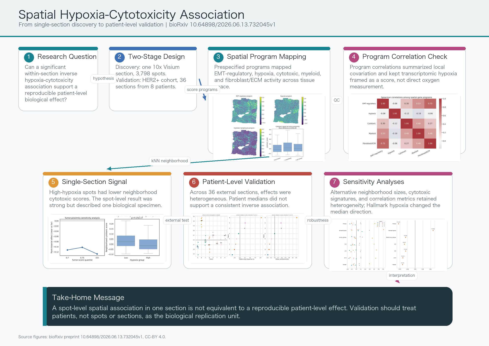

Discovery signal
In one 10x Genomics Visium breast cancer section, hypoxia-related transcription was inversely associated with neighborhood cytotoxic gene activity.
bioRxiv preprint · Posted June 17, 2026
Single-section spatial associations can be statistically strong while failing to reproduce consistently across patients.
Citation
Binyu Dong, Zhaoqi Song, and Yangyang Yin. bioRxiv, 2026.
Preprint. This manuscript has not been certified by peer review.
In one 10x Genomics Visium breast cancer section, hypoxia-related transcription was inversely associated with neighborhood cytotoxic gene activity.
The association was tested in an independent HER2-positive cohort containing 36 sections, 13,619 spots, and eight patients.
Spot-level evidence from a single section should not be interpreted as a patient-level biological effect without patient-level replication.
Study workflow

Plain-language summary
Spatial transcriptomics measures thousands of spots from a tissue section, but those spots are not thousands of independent biological replicates. This study separates the within-section association between tumor hypoxia and cytotoxic lymphocyte activity from the question of whether the effect reproduces across patients. The discovery section showed a clear inverse association, but the external patient-level analysis revealed heterogeneous directions and no consistent inverse effect.